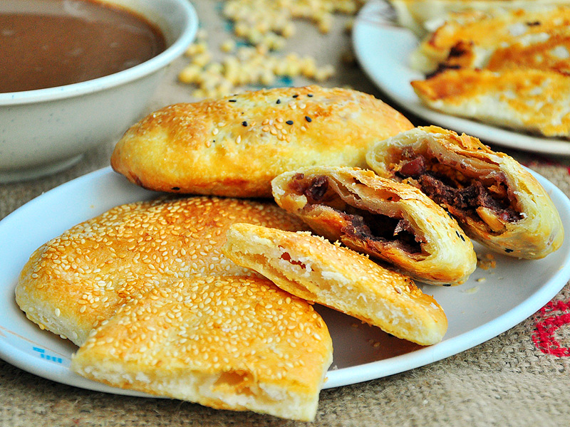

閩式燒餅
因為金門的人口組成有很多外省老兵，所以帶來故鄉的飲食習慣，早餐通常吃粥、燒餅油條之類的。這裡要特別介紹的是好吃的閩式燒餅。金門的燒餅做法跟台灣不同，不是夾著油條、蛋，而是包有餡料的。每家燒餅店做法略有不同，各具特色。
金門的閩式燒餅嘗起來有種迷人的香氣，原因為它們皆是使用豬油來製作，剛烤好的燒餅更能吃出外皮的酥香，一般來說金門燒餅主要分為鹹、甜兩種，鹹的是圓的；甜的是長橢圓形。鹹的燒餅裡頭包了豬腿肉以及金門的青蔥，吃起來口味稍重，他們好吃的秘訣是採用高粱豬後腿肉，加上金門蔥，層層酥皮，再灑上芝麻，讓人口齒留香。甜燒餅則非採用動物性油脂，內餡是麥芽糖，所以素食者可以嚐嚐這口味。燒餅即使放涼後，還是很美味，只要放入烤箱加熱幾分鐘，就像剛出爐的一樣！
